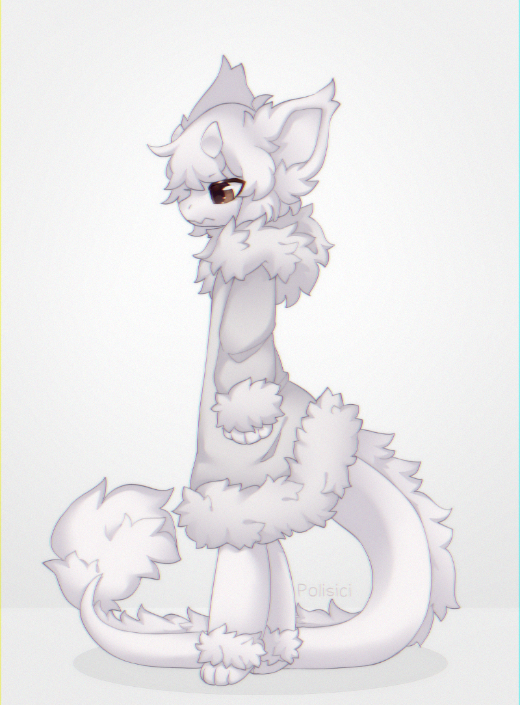

- Euly -
Hi!
I'm
Euly
. I'm a furry, a software developer, and a musician.
My pronouns are
she/her
, and I am a
fluffy dragon
!

YouTube
Ko-fi
Revolt
: Euly#7753
ast3r.in
Notable Software
Dn-FamiTracker
- A fork of j0CC-FamiTracker that adds various tweaks and improvements.
FM
- FM synthesis tool for various wavetable synths.
N163 WaveSynth
- Modular synth for Dn-FamiTracker N163.
Growtree
- Console-based tree generator for Linux/Windows.
Power-up Panels Calculator
- Tool to always win at New Super Mario Bros. Wii Power-up Panels.
To add more...
Miscellaneous Links
Mandelbrot set
- In-browser render of the mandelbrot set.
Riemann's continuous non-differentiable function
- An animated realtime render.
Newton's fractal
- In-browser render of a Newton's fractal.
Sierpinski triangle
- In-browser render of a Sierpinski triangle.
TeX
- Simple TeX renderer with KaTeX.